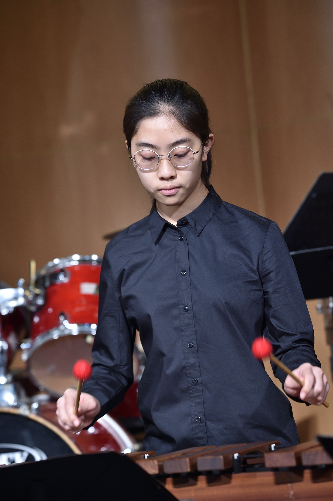
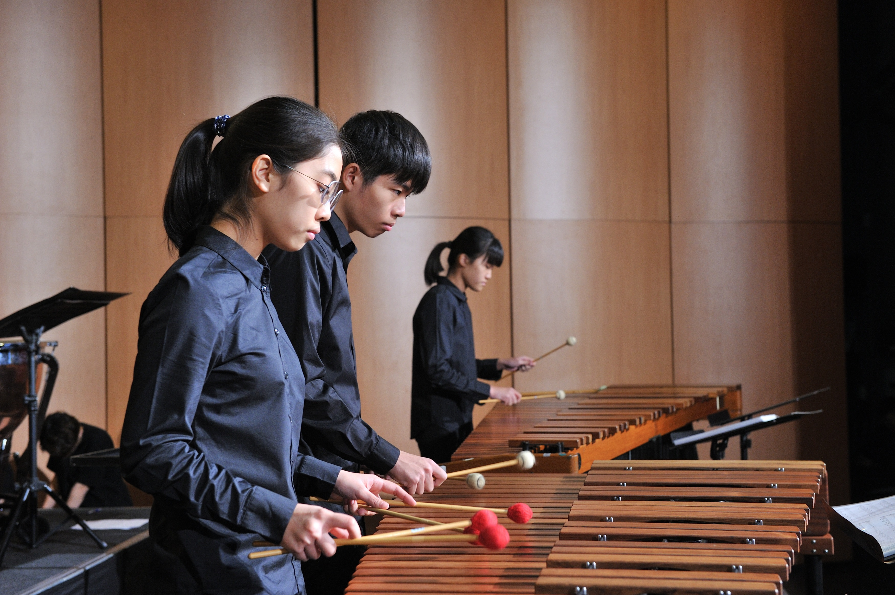
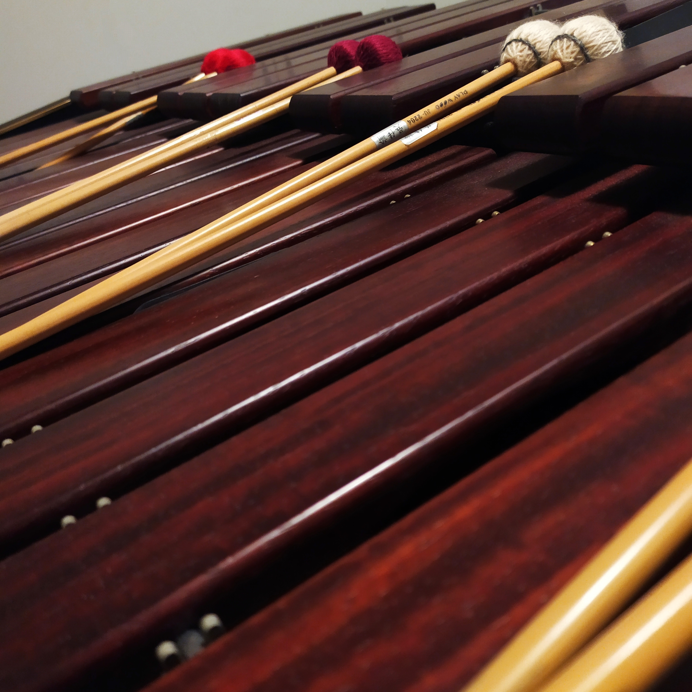
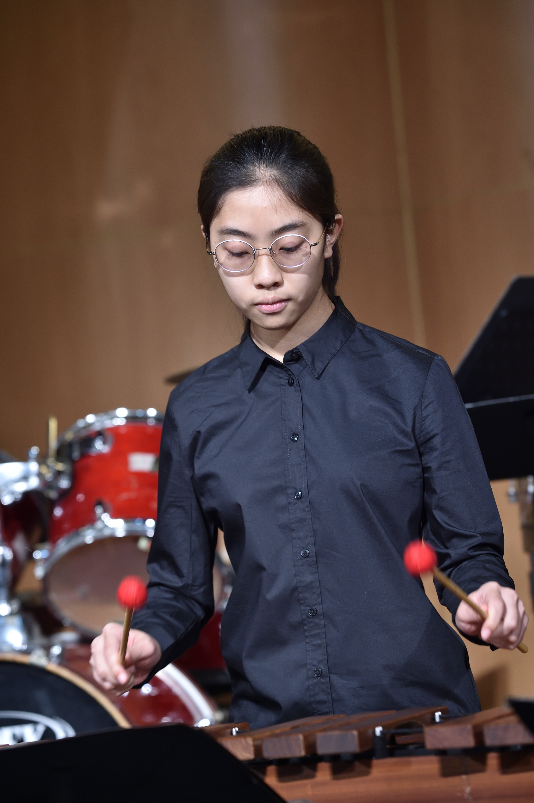
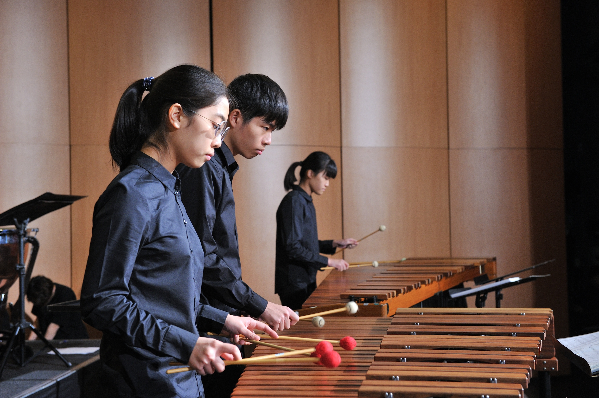
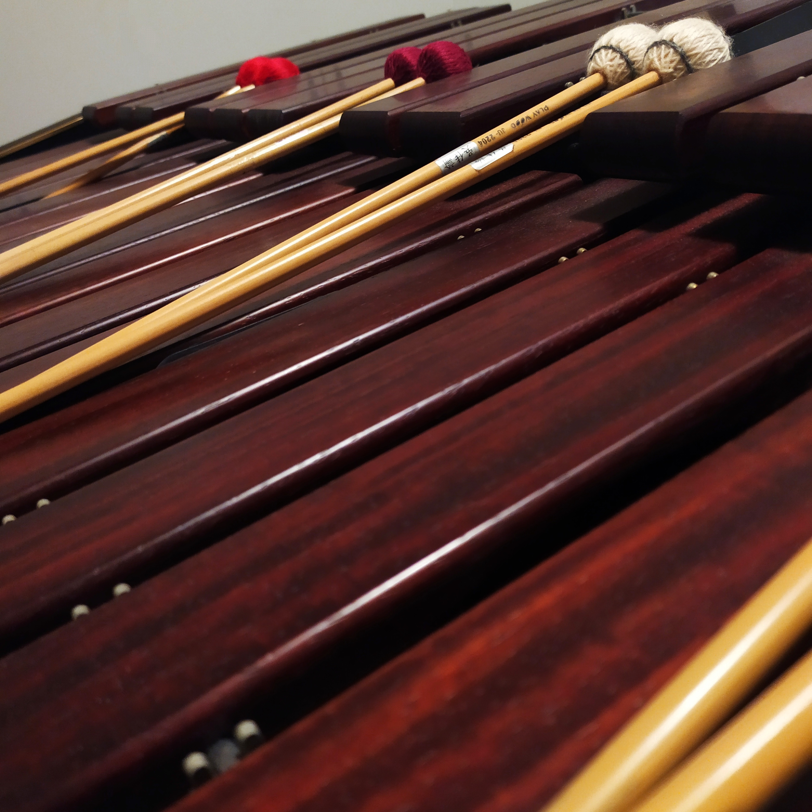

Annual Concert
The most important event of the year is the annual concert, where we are the stars of the show, given the opportunity to stand on stage and showcase our talents. From being a nervous freshman at the beginning to becoming an experienced performer who knows the entire process inside out, I’ve learned to truly enjoy the stage and make the most of every moment up there. After all, we prepared for so long just for this moment.
2022 was my graduation year, and it was also my final concert. At first, it felt like a disaster because our group, being older, had our rehearsal scheduled later. We ended up getting pushed back by the groups before us, and by the time it was our turn, we had only five minutes left. We could only go on stage to check our instruments and then leave—there was barely time to play anything. This venue was new to us, and since we hadn’t rehearsed, it felt incredibly daunting, especially with only twenty minutes until the audience arrived. Everyone was super nervous, and the pressure was immense. We could only practice our rhythms in the back, recalling the tricky spots we’d encountered in previous rehearsals and reminding ourselves to focus.
We were the second-to-last group in the second half of the concert. Before going on stage, we encouraged each other, saying to treat it like any other practice session and not to overthink it. We wanted to enjoy this last performance before graduation. Once we were on stage, I wasn’t as nervous as I expected, since it wasn’t my first time performing. As I watched the conductor’s hands come down, we all struck our mallets together, and the familiar melody filled the air. In that moment, I seemed to forget about the audience and everything else around me, completely immersed in the music, enjoying it alongside my fellow performers. When I finally came back to reality, we had already finished, and the audience erupted in enthusiastic applause. Still catching my breath, my arms slightly sore from my engagement in the performance, I looked out at the audience and wished time could freeze at that moment. I longed to continue playing and collaborating with everyone—graduation felt bittersweet.
Then I heard the host’s voice: "Graduating student Chia-Yu Wu, let’s wave to her!" That brought me back to reality. I smiled brightly and waved to the audience, just like the seniors I admired in years past. As a child sitting in the audience, I had watched those older students play so skillfully, wishing I could be like them. Now, I had become the big sister they looked up to, standing on stage and waving as a graduate. Perhaps there was a little girl in the audience looking at me, silently vowing to become someone like me one day.
Below is a video from the concert before my graduation, which I consider my most satisfying performance!

 




